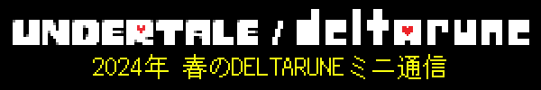 |
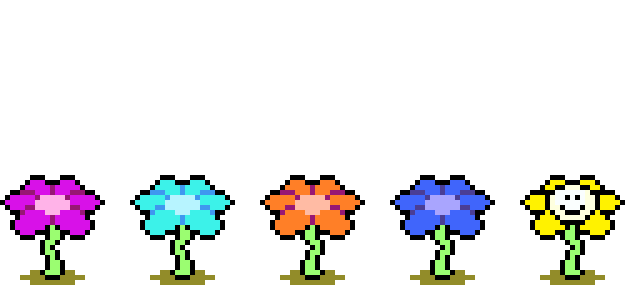 |
ハロー、“gentlemen and gentlemen”。 |
5月も半ばになりましたが、みなさん、何かいいこと、ありましたか？ |
5月の半ばに何かいいことがあるものなのかは、知りませんけど。 |
…たぶん、あんまり関係ない気がしますけど。 |
とりあえず、今月はミニメールマガジンをお届けします！ |
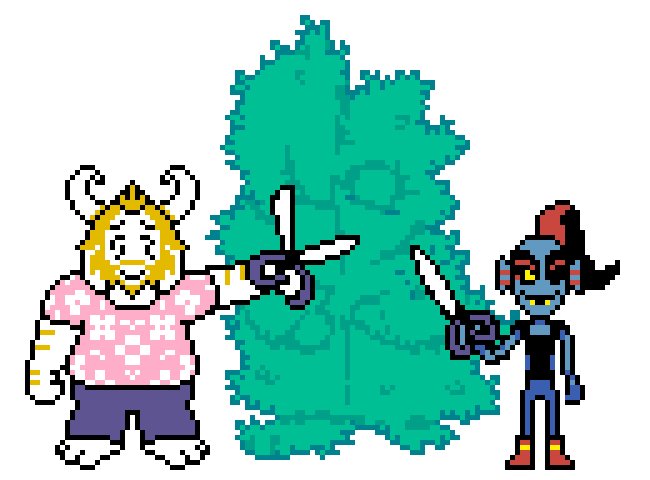 |
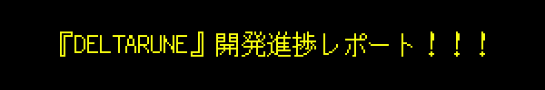 |
今月は、とってもいいニュースと…それ以外のニュースがあります！ |
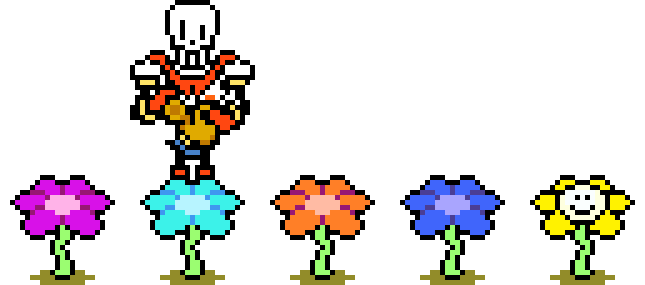 |
まず、とってもいいニュースから。新たにチームに迎えたプロデューサーの管理スキルが炸裂して、開発メンバーをさらに数人増やすことができました！まだみんなチーム入りして1か月半ちょっとですけど、すでに作業効率が格段に上がっています。うちのプロデューサーが掲げる方針は、「ファンのみなさんのために、開発チームが全員おじいちゃんおばあちゃんになってシワクチャになる前に、ゲームを完成させよう！」です。僕も賛成！（＊ トビーは、シワクチャになるのを、ただちに止めた） |
それ以外のニュースです… |
Chapter 4の開発は、これまで以上に順調に進んでいます。チーム内で立てたスケジュール通りに作業が進んでいるし、新メンバーたちのおかげで、さっそく、このチャプターの雰囲気も感触も、ぐっとブラッシュアップされました。とってもいい感じ！ |
現在の細かい進捗は… |
|
以上が全部できあがったら、今度は「テンポ調整」とか「改良」というローラーで、デコボコをきれいにならす作業に移ります（この作業にかかる時間は、未知数です）。 |
僕としては、次に進捗レポートをお届けするころには、少なくともChapter 4のラフバージョンが完成していて、その半分ぐらいは、デコボコがきれいにならされた状態だといいな、と思います。さらに、開発チームの一部のメンバーは、Chapter 5の制作に取りかかっているといいですね。 |
では最後に、それ以外の、それ以外のニュースを… |
こんな感じで、開発は順調に進んでいますが、リリース日については、まだお知らせできる段階にはありません。Chapter 4の開発が滞りなく完了しても、予期せぬ要素が潜んでいる可能性もあります。なので、まだ、はっきりとお約束することはできないんです。以上を踏まえつつ、お知らせできるようになり次第、なるべく早く、お知らせします！僕がこの8年間、頭の中で温めてきたシーンやキャラクターたちを、早くみなさんに見てもらいたくて、ウズウズしてます… |
まとめると、リリースはまだまだ先…とはいえ、ひと月ごとに、チームの中で現実感がヒシヒシと増してきています！ |
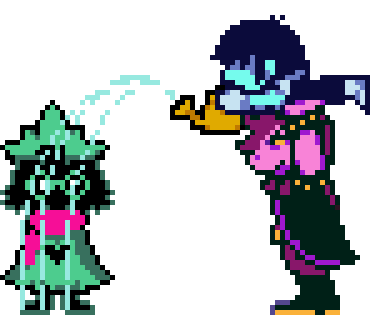 |
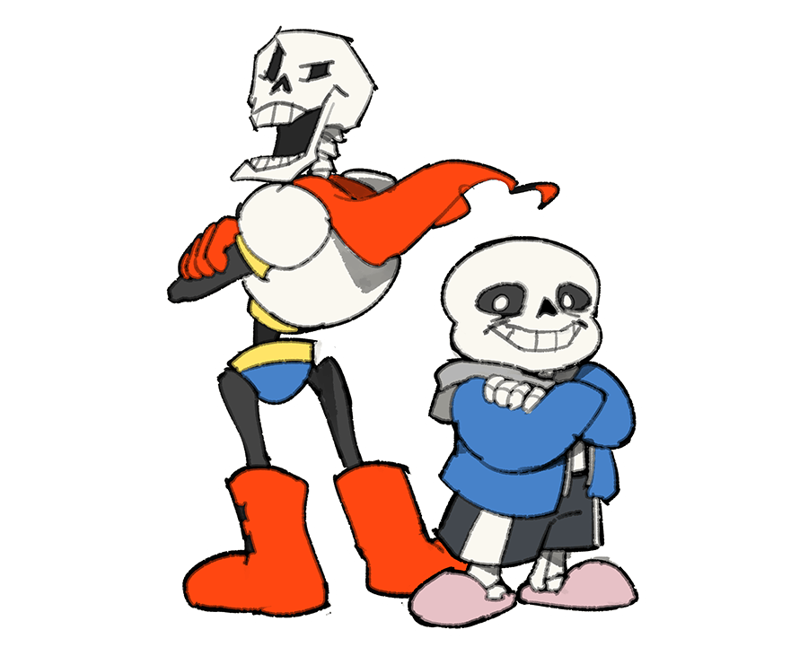 |
突然ですが！ここでパピルスさんへのインタビュー、第2弾をお届けします！ |
パピルスへの質問は、募集したときに8万通以上いただいたので、ネタはまだまだ、いくらでもありますよ… |
というわけで、さっそくどうぞ！ |
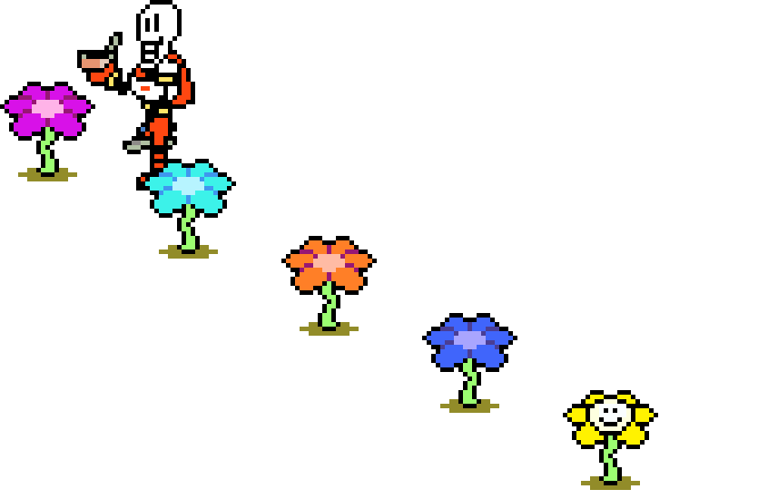 |
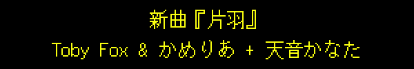 |
みなさんは、VTuber って、知ってますか…？ |
… |
… |
先日僕は、VTuberグループ「ホロライブ」に所属する天音かなたさんに、楽曲を提供する機会をいただきました！ |
かなたさんは数年前、『UNDERTALE』を初見プレイする様子を実況配信してくれたんですが、サンズ戦でとても苦戦して、勝てるまで何十時間も続けてプレイして、やっと倒すことができたエピソードが有名です。僕個人としては、平和主義ルートのエンディングで涙を流していた姿が印象的でした。 |
僕は以前からかなたさんの歌声が好きで、とても独特な、唯一無二の響きだと思っていました。それプラス、天使の感性もお持ちのかなたさん。彼女と曲を作ったら、すごくいいものができそうな気がしたんです。それで、ご本人にお願いしてみたら…実現してしまいました！ |
かめりあさんのすばらしい制作スキルと、かなたさんの唯一無二の歌声のおかげで、最高にスペシャルな楽曲に仕上がりました。 |
じつは、歌入れ前のデモの段階であまりにも気に入ってしまって、「もしこの案がボツになったら、『DELTARUNE』に使おうかな…」なんて思ってたぐらいです。 |
ここで、かなたさんのことを少し説明しますね。 |
ふだんはおちゃらけがちなVTuberのかなたさんですが、彼女には、いつか本格的なアーティスト／ミュージシャンとして認められたいという夢があります。ただ…じつはかなたさんは片耳の聴力に問題を抱えていて、歌をやめてしまおうと思ったこともあったそうです。歌手になることを夢見る人にとって、聴力を失うことほど怖いことはありません。 |
そしてこれは、僕自身の境遇とも重なるところがあります。僕も、片方の手首に問題を抱えているからです。手首を痛めていると、絵を描くことも、音楽を作ることも、文章を書くことも、プログラミングすることもできません。つまり、ゲームを作れないんです。 |
夢も希望も、消えていくように思えるときが、あるかもしれません。成し遂げたかったことが、どんどん空へ舞い上がっていって、自分は穴に落ちたまま横たわって、翼も引きちぎれて、もう二度と生えてくることはない。もどかしさだけが募って、そのまま永遠に地面に這いつくばったままのような気がしてくるかもしれません。 |
だけど… |
それは、違います。 |
あなたは、まだ飛べる。 |
これは、そういう歌です。 |
曲調が激しくなる直前に、ささやかれる言葉。それは魔法の言葉です。それを言えば、あなたはなんだってできる。言いつづけるかぎり、あなたが負けることはありません。 |
自分の一部を失っても、もう立ち上がれない気がしても、大丈夫、ちゃんと立ち上がれます。翼が片方しかなくたって、翼なんかなくたって、飛べるんです。 |
だから、歌いつづけて。 |
歌うことを、やめないで。 |
かめりあさんのアレンジがとにかくすばらしいので、曲オンリーでも聴いてみてください！ |
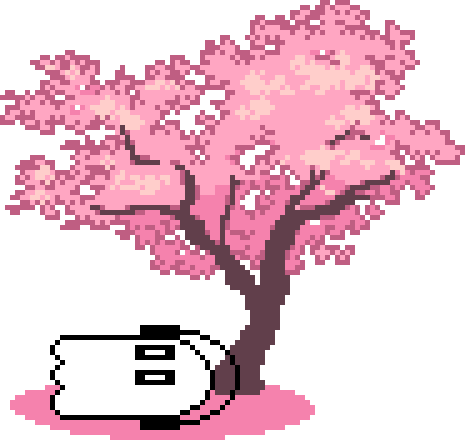 |
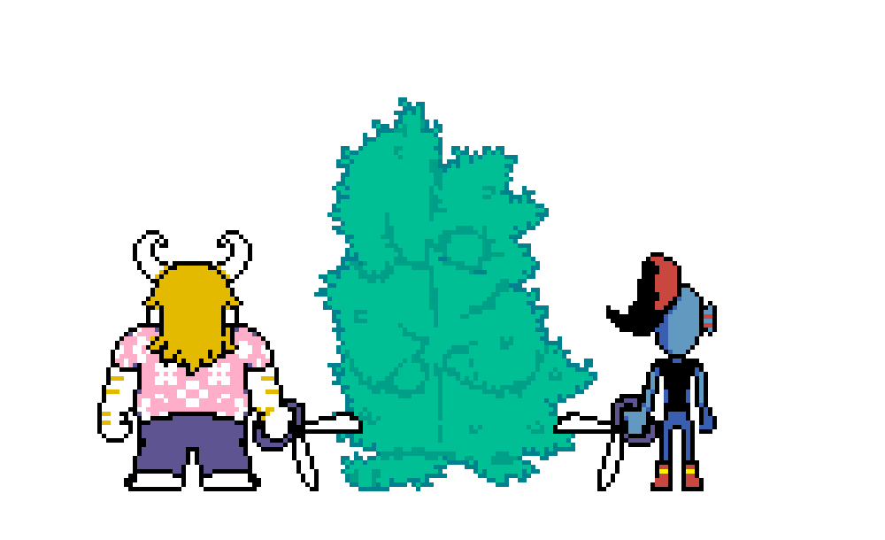 |
そんなこんなで、『DELTARUNE』の開発は順調に進んでいますが、リリースはまだまだ先です。 |
みんな、待ちくたびれて燃えつきちゃわないといいな… |
でも…開発チームは燃えつきてませんよ！むしろ逆！！燃えに燃えてます！！ファイヤー！！！ |
あっつ！！ |
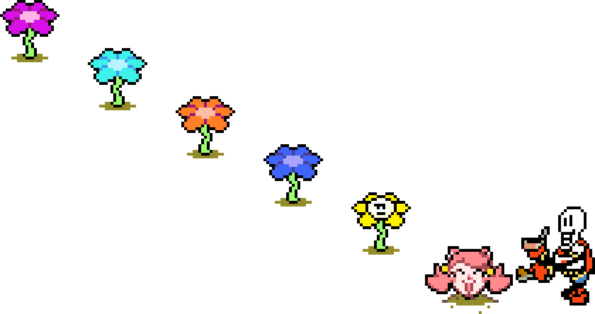 |